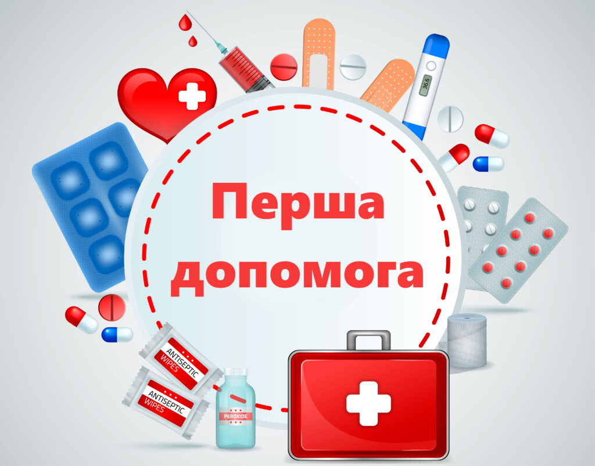

Медична допомога постраждалому

Загальні правила надання першої допомоги
Домедична допомога в умовах воєнного стану: що потрібно робити
Домедична допомога в умовах бойових дій: основні протоколи
Перша медична допомога при кровотечі
Перша медична допомога при зупинці серця і дихання
Надання першої медичної допомоги при опіках, переохолодженні, втраті свідомості
Перша медична допомога при пораненнях
Перша медична допомога при харчових отруєннях
Перша медична допомога при ураженні струмом
Перша медична допомога при пожежі
Перша медична допомога при ДТП
Перша медична допомога при падінні з висоти
Алгоритм реанімаційних дій (на малюнку)
Перша медична допомога (на малюнку)
Перша медична допомога (на малюнку. узагальнюючий)